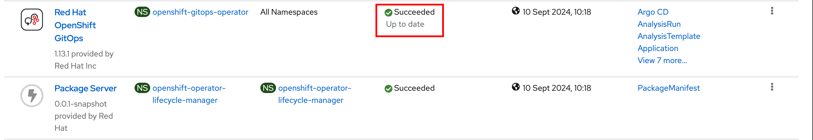
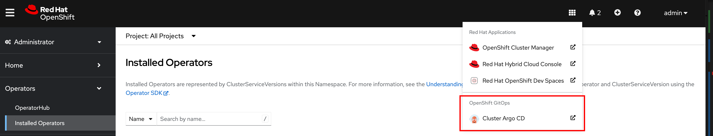
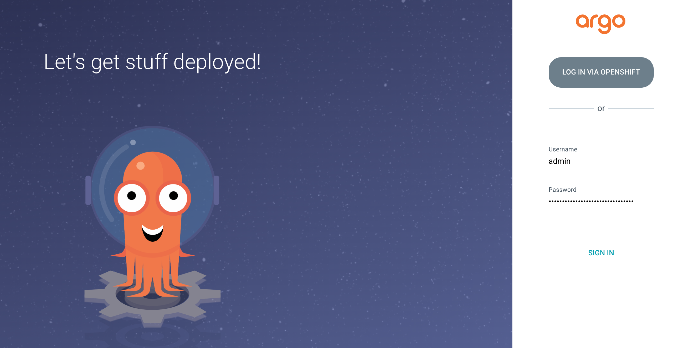

Installing Dev Spaces using OpenShift GitOps
For managing multiple operators with complex customization and configuration, the GitOps approach is recommended to simplify configuration management, and provide traceability and auditing. You maintain the operator configuration, along with other cluster resources needed for the operator to work in a Git repository, and a product like OpenShift GitOps (based on the open source ArgoCD project) keeps track of the Git repository and applies the changes automatically to the cluster without manual intervention.
In this section, you will install OpenShift GitOps, and then store the Dev Spaces operator and Workspace configuration in a separate Git repository. You will create a GitOps Application for Dev Spaces and let GitOps install the product on the cluster.
Pre-requisites
-
You should have provisioned an OpenShift 4.16+ cluster as outlined the
Classroom Environmentsection of the course home page. -
Download the OpenShift client
ocfor your platform from from the OpenShift web console by clicking the "?" icon on the top right navigation bar. Uncompress the archive file, and then copy theocbinary for your platform to the system path (usually/usr/local/binon UNIX systems). -
Cluster administrator access to OpenShift (both CLI and web console). Verify that you can log in to the OpenShift web console and CLI as a cluster administrator.
-
Download the latest
dsctool for your operating system from https://developers.redhat.com/products/openshift-dev-spaces/download.-
Extract the archive file and copy the
dscdirectory to a suitable location in your workstation (/usr/localis a good choice). -
Add the
/usr/local/dsc/binfolder to your operating systemPATHenvironment variable
-
Lab: Installing Dev Spaces using OpenShift GitOps
If you have previously installed Dev Spaces using a different method, then run dsc server:delete --delete-all --delete-namespace -n openshift-devspaces as the admin user to completely remove the existing instance before you proceed with the installation.
|
-
You will install OpenShift GitOps first. Consult the links in the references section to get an understanding of how GitOps is installed and can be used to manage the operator lifecycle. In this lab, you will install the OpenShift GitOps operator using the
ocCLI. -
Fork the Git repository https://github.com/RedHatQuickCourses/devspaces-apps.git to your own Git account (GitHub or GitLab should work fine).
You will point the OpenShift GitOps configuration to fetch the operator configuration from this forked Git repository. If you fail to point the GitOps configuration to the your forked repository, then the configuration from the upstream RedHatQuickCoursesrepository will be applied and may break your Dev Spaces instance! -
Log in to the OpenShift cluster as the
adminuser (user with cluster administrator permissions) using theocCLI.$ oc login -u admin <OpenShift API URL>
-
Download and inspect the https://github.com/RedHatQuickCourses/devspaces-apps/blob/main/gitops-install/gitops-operator.yaml file from your forked repository. This configuration is used to install the OpenShift GitOps operator (For simplicity sake, we install it in
Automaticapproval mode). -
Apply the configuration to install OpenShift GitOps
$ oc apply -f gitops-operator.yaml
Wait for a few minutes while the GitOps operator is installed. Click on
Operartors > Installed Operatorsand verify that theStatuscolumn for theRed Hat OpenShift GitOpsoperator saysSucceeded.Figure 1. GitOps operator installed -
After the installation finishes, the OpenShift web console will inform you that you need to refresh the web console. Do so, and you will now see a new application shortcut to the OpenShift GitOps dashboard
Figure 2. New ArgoCD Dashboard Link -
Click the
Cluster ArgoCDlink. You will be shown the ArgoCD log in page. A random password has been automatically generated for you by the operator. To get the password, run the followingoccommand:$ oc extract secret/openshift-gitops-cluster -n openshift-gitops --to=- long password
Copy the password for the next step.
-
Log in to ArgoCD as the user
adminwith the password extracted from the previous step.Figure 3. ArgoCD Log in Page -
After you log in you should see the ArgoCD dashboard page with no ArgoCD applications installed. Before you create a new ArgoCD application, you need to provide permissions to the ArgoCD controller running in the
openshift-gitopsnamespace to create resources in theopenshift-devspacesnamespace. The easiest way to do this is to providecluster-adminrole to the service account running the controller. Run the following command as a cluster administrator user:$ oc adm policy add-cluster-role-to-user cluster-admin \ system:serviceaccount:openshift-gitops:openshift-gitops-argocd-application-controller clusterrole.rbac.authorization.k8s.io/cluster-admin added...Failure to assign proper roles to the controller service account will result in deployment failures for applications. -
Download and inspect the operator installation YAML configuration file at https://github.com/RedHatQuickCourses/devspaces-apps/blob/main/gitops-config/devspaces/00-devspaces-operator-cli.yaml. It is mostly similar to the configuration used in the previous section with some extra annotations for ArgoCD. Note the
argocd.argoproj.io/sync-waveandargocd.argoproj.io/managed-byannotations. Note that we want to install Dev Spaces inAutomaticapproval mode to avoid manual intervention. -
Download and inspect the YAML configuration file at https://github.com/RedHatQuickCourses/devspaces-apps/blob/main/gitops-install/devspaces-argo-app.yaml to create a new ArgoCD application for Dev Spaces installation and configuration:
apiVersion: argoproj.io/v1alpha1 kind: Application (1) metadata: (2) name: devspaces-config namespace: openshift-gitops spec: destination: (3) namespace: openshift-gitops server: https://kubernetes.default.svc project: default source: path: gitops-config/devspaces (4) repoURL: https://github.com/your_username/devspaces-apps.git (5) targetRevision: main (6) syncPolicy: (7) automated: selfHeal: true prune: true syncOptions: - CreateNamespace=true
| 1 | foo |
| 2 | bar |
| 3 | baz |
| 4 | qux |
| 5 | lol |
| 6 | lol |
| 7 | lol
|